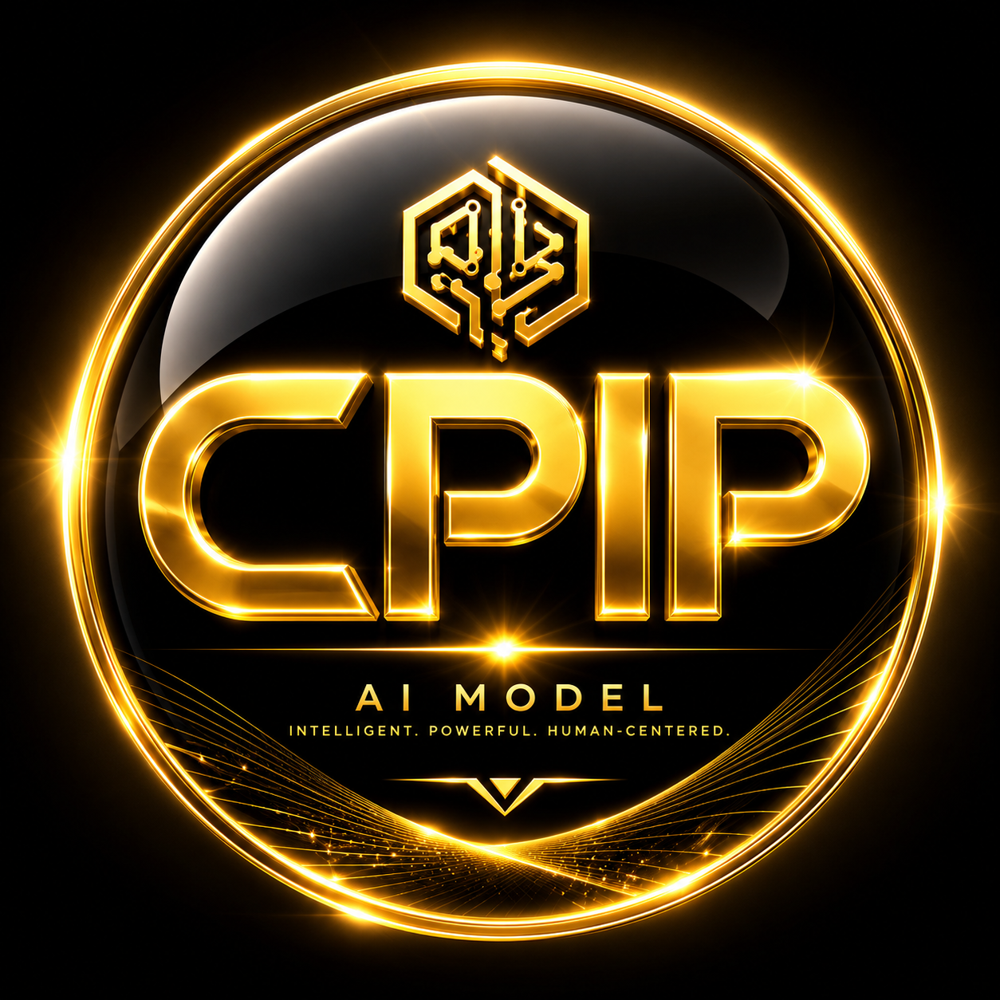

Your browser found the WebGPU API but cannot access your graphics card hardware.
chrome://settings/system
chrome://flags
To initialize the Clinical Safety Kernel, please define your medical specialty.

CLINICAL PRECISION INTELLIGENCE
1. Click "Launch Audit" below. 2. In Gemini, click the "+" icon. 3. Upload CPIP.ipng to activate the Kernel.